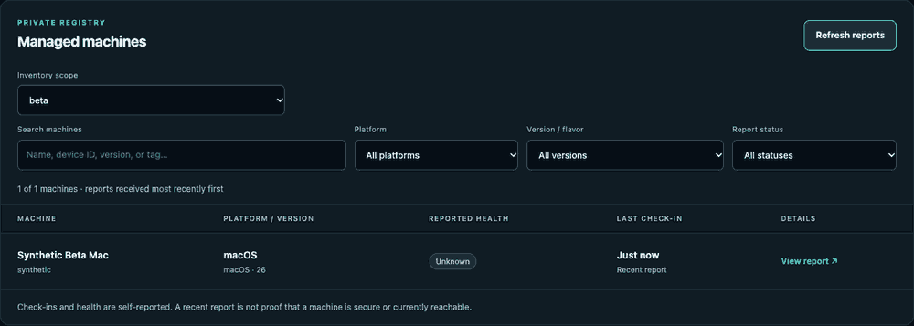

Mac development preview · 0.5.2 build 4
Review a Mac’s developer inventory kit
Prepared kits let recipients check which group would receive their Mac’s inventory. Reporting is pending. There is no active developer-group download or verified production receipt. The dashboard examples below use synthetic reports.
1. Open the private package
Extract the complete ZIP in Finder. Keep the app and its sibling Developer Inventory folder together. Open RedAgent Inventory Installer.app from your own account. If macOS opens it from a temporary location and it cannot find the folder, click Select Developer Folder… and choose Developer Inventory from that same extracted package, then click Select Folder.
2. Check the group and its status
Waiting for cloud activation means the folder contains public group information only. Install and Share Status stays disabled. You can close the installer here. An Offline fixture is a test package with Fleet check-ins disabled.
{
"group": "cobalt",
"environment": "production",
"awaitingRegistration": true
}The intended inventory fields include the Mac name, system and agent versions, architecture, device ID and check-in time. A prepared kit cannot submit those fields. Its local group label identifies the intended destination. Production reporting has not been activated.
Show Status displays local state. In an installed test fixture, Installed developer inventory group identifies the local assignment. A genuine Last accepted by Fleet timestamp requires an acknowledgement from Fleet. A group label or pending status cannot establish delivery.
3. View the group in Fleet
Open the Fleet portal supplied by your administrator and sign in with an authorized operator account. Under Managed machines, choose your group in Inventory scope. Fleet clears the previous rows before loading Mac status reports for that group. Use View report to inspect one Mac. Default fleet returns to the ordinary Fleet status view.

If the group is missing, ask the operator whether it has been configured. A denied read clears the rows. Check the signed-in account’s CloudKit access, then use Refresh reports.
4. Remove an installed test fixture
If you installed the offline test fixture, click Uninstall to remove its login item, runtime and management app. Your account retains its local inventory identity, assignment and saved status. Opening a pending kit alone installs no reporter.
Configure the operator view
Set the optional deployment variable VIPER_FLEET_INVENTORY_GROUPS to a JSON array of opaque group codes, such as ["cobalt","beta"]. Each starts with a lowercase letter, contains only lowercase letters and digits, and has at most 24 characters. These codes appear in public site configuration. Keep developer names and credentials private.
The selector reads InventoryGroup_<code> in the configured Fleet container. CloudKit permissions on that record type govern access. With no configured groups the portal uses the existing Fleet view. Explore sample fleet continues to show invented records.
CloudKit Console warns that Apple’s server-to-server key grants unrestricted access to the container’s public database. The key-registration form offers no per-key record-type restriction. Keep the private key out of all recipient apps, ZIPs and folders. Apple’s CloudKit Catalog